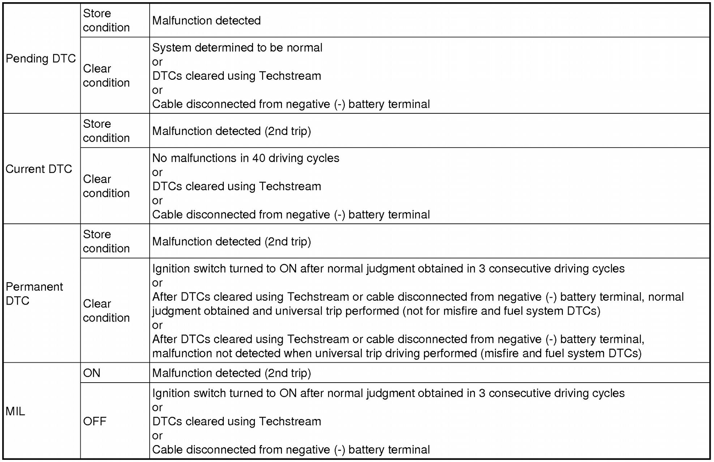
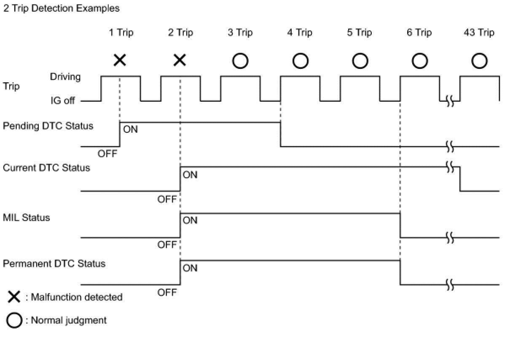
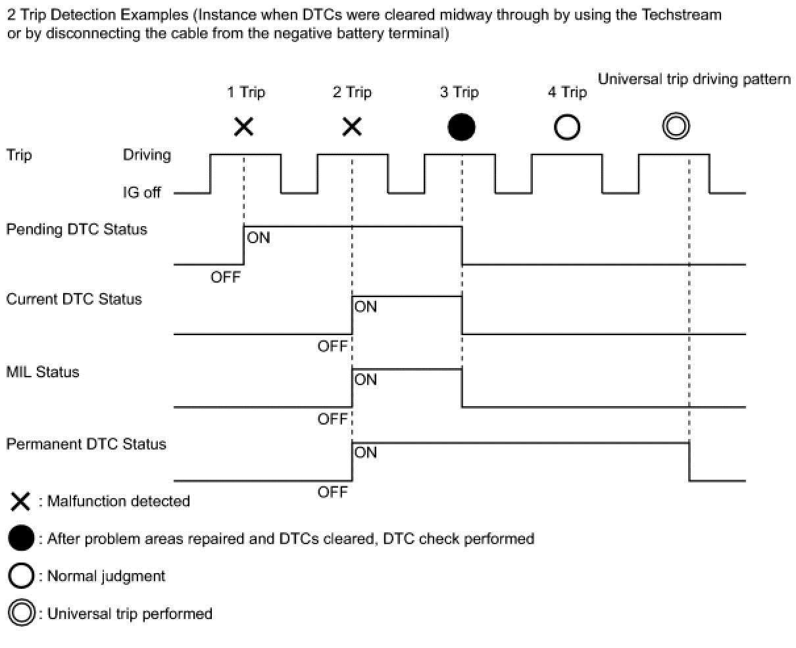
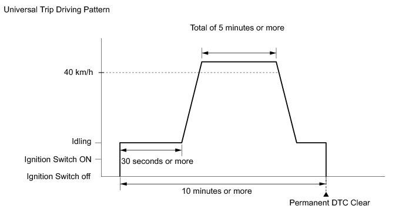

2AR-FE ENGINE CONTROL: SFI SYSTEM: DTC CHECK / CLEAR
NOTICE:
When the diagnosis system is changed from normal mode to check mode or vice versa, all DTCs and freeze frame data recorded in normal mode are cleared. Before changing modes, always check and make a note of DTCs and freeze frame data.
HINT
* DTCs which are stored in the ECM can be displayed on the Scan Tool. The Scan Tool can display the current, pending and permanent DTCs.
* If a malfunction is detected during the current driving cycle, current and permanent DTCs are stored.
* Some DTCs are not stored if the ECM does not detect the same malfunction again during a second consecutive driving cycle. However, such malfunctions, detected on only one occasion, are stored as pending DTCs.
* Current and pending DTCs can be cleared by using the Scan Tool or by disconnecting the cable from the negative (-) battery terminal. However, permanent DTCs cannot be cleared using either of these two methods.
* After clearing current DTCs using the Scan Tool (or by disconnecting the cable from the negative (-) battery terminal), permanent DTCs can be cleared when the system is determined to be normal for the relevant DTCs and then the universal trip is performed. The driving pattern to obtain a normal judgment is described under the "Confirmation Driving Pattern" for the respective DTC.
2 Trip Detection Examples



HINT
* Obtaining a normal judgment and performing a universal trip driving pattern can be done in the same driving cycle or in different driving cycles.
* It is unnecessary to obtain a normal judgment if the DTCs are misfire or fuel system DTCs.
1. CHECK DTC
(a)Connect the Scan Tool to the DLC3.
(b)Turn the ignition switch to ON.
(c)Turn the Scan Tool on.
(d)Enter the following menus: Powertrain / Engine and ECT / Trouble Codes.
(e)Check the DTC(s) and freeze frame data, and then write them down.
(f)Check the details of the DTC(s) .
2. CLEAR DTC (Pending and Current DTC)
(a)Connect the Scan Tool to the DLC3.
(b)Turn the ignition switch to ON.
(c)Turn the Scan Tool on.
(d)Enter the following menus: Powertrain / Engine and ECT / Trouble Codes.
(e)Clear the DTCs.
3. CLEAR DTC (Pending and Current DTC without using Scan Tool)
(a)Perform either of the following operations:
NOTICE:
After turning ignition switch off, waiting time may be required before disconnecting the cable from the negative (-) battery terminal. Therefore, make sure to read the disconnecting the cable from the negative (-) battery terminal notices before proceeding with work .
(1)Disconnect the cable from the negative (-) battery terminal for more than 1 minute.
(2)Remove the EFI NO. 1 and ETCS fuses from the engine room relay block and junction block assembly located inside the engine compartment for more than 1 minute.
4. CLEAR PERMANENT DTC
HINT
Even if the following procedure is not performed, permanent DTCs are cleared by obtaining a normal judgment during 3 consecutive driving cycles.

(a)Connect the Scan Tool to the DLC3.
(b)Turn the ignition switch to ON.
(c)Turn the Scan Tool on.
(d)Enter the following menus: Powertrain / Engine and ECT / Trouble Codes.
(e)Check if permanent DTCs are stored.
HINT
If permanent DTCs are not output, it is not necessary to continue this procedure.
(f)Clear the DTCs.
(g)Perform the respective confirmation driving patterns in order to obtain a normal judgment for the output DTCs.
HINT
* Confirmation driving patterns do not need to be performed for misfire and fuel system DTCs.
* For the confirmation driving pattern, refer to the procedures for the relevant DTC .
(h)Perform the universal trip.
CAUTION:
When performing the confirmation driving pattern, obey all speed limits and traffic laws.
HINT
The driving pattern to obtain a normal judgment and the universal trip driving can be performed consecutively in the same driving cycle.
(1)Idle the engine for 30 seconds or more.
(2)Drive the vehicle at 40 km/h (25 mph) or more for a total of 5 minutes or more.
HINT
It is possible to complete the drive pattern even if the vehicle decelerates to less than 40 km/h (25 mph) during the driving cycle provided that the vehicle is driven at 40 km/h (25 mph) or more for a total of 5 minutes.
(3)Allow 10 minutes or more to elapse from the time the engine is started.
(i)Enter the following menus: Powertrain / Engine and ECT / Trouble Codes.
(j)Check that the permanent DTCs have been cleared.
HINT
The permanent DTCs are cleared when the universal trip is completed.